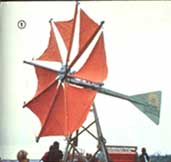
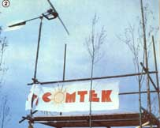
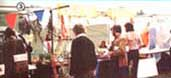
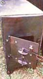
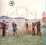
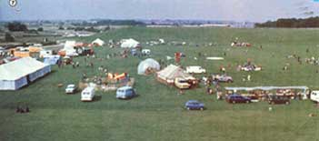

MOTHER's own Copthorne Macdonald recently returned from an extended European trip. During his travels, he attended the U.N. Conference of Science and Technology for Development (UNCSTD) in Vienna . . . the Non-Governmental Organizations Forum (NGO Forum) held in that same city . . . and Britain's Community Technology Festival (COMTEK). The following article is the second in a series of reports from Cop on these attempts to determine how technology can best meet the needs of the world's people.
Though Britain's Community Technology Festival - held in Milton Keynes, England - featured solar water heaters, wind generators from 5 to 700 watts, a paper recycling operation, and wood-burning stoves, the most exciting aspect of the fair (to me, at least) was the help-others-do-it-themselves attitude that pervaded the event.
MAKE IT AND TAKE IT HOME
For example, one group that championed this concept was Laurieston Hall (Castle Douglas, Kirkudbrightshire, Scotland DG7 2NB) . . . a community of 15 adults and 10 children who live in a large country mansion in Scotland and are involved in working with sheet metal and building stoves. If such metalwork interests you, you could - for about $10 a day to cover room and board - live with these people, use their shop, benefit from their advice, and build your own. wood-burner. The average cost of materials ranges from about $45 per stove to nothing at all if you bring your own oil drum or sheet metal with you. It's hard to beat the organization's "learn by doing and take the finished product home" approach!
Or perhaps your community could use an institution like London's OK Garage, which is sponsored by the Mutual Aid Centre (18 Victoria Park Square, London, E2, England). It's a consumer cooperative, providing tools and other facilities which allow folks to repair their own cars. (The garage stocks spare parts and sells gasoline, too.)
The Alternative Technology Group (Open University, Walton Hall, Milton Keynes, England MK7 6AA ), on the other hand, offers four workshops equipped for metalwork, woodwork, pottery, jewelry-making, and weaving. In addition, the group has a media center with offset printing, typing, and photographic facilities . . . and all of its resources are available for a small "rental" fee.
COOPERATIVE EXCELLENCE
Of course, COMTEK '79 had attractions other than such do-it-yourself opportunities, too. For one thing, a big tent was set up to house the talks and slide shows that various groups had prepared. (I even did a show about the aims of the New Directions Radio organization.) Films were shown in another tent . . . antinuke theater was staged in the grassy fields ... and excellent meals were served by Bath Civil Aid. (The members of the last-mentioned organization have taken over Bath, England's civil defense program, and they travel around the country serving meals to large gatherings at rock concerts and similar events . . . honing their civil defense skills in the process, of course! )
I came away from COMTEK with the impression that the British have continued to excel at communal technology. My first encounter with their excellence - which took place in the late 50's - concerned amateur TV. At that time, television equipment was terribly expensive, and there was almost no amateur activity in the U.S. To my chagrin, however, I discovered that there were ham TV stations dotted all over Britain.
How - I wondered - had the much poorer British managed this? The answer was that it wasn't difficult for them at all. American hams, you see, were thinking only in terms of each person's having his or her own personal station, while the British simply decided to pool their money and efforts. So, groups of 15 to 80 individuals had worked together to create one station they could all use.
Is there a lesson for us North Americans in this? I think there is, and that it's a very important one, indeed!
Many of us tend to have a narrow view of technology . . . defining it in terms of such specific twentieth century examples as cars, computers, wind-powered generators, or solar water heaters. However, the broad meaning of "technology" covers more than mere hardware.
Look at it this way: We human beings have goals, tasks we hope to accomplish, and ways we want to live . . . and technologies are the aids we select in our attempt to achieve such aims. In other words, they are multipliers of human capability. They are ways and means by which we try to realize our dreams.
THE STARTING POINT
So our starting point (if we hope to use technology rather than let it use us ) is to be sure we have a fairly clear vision of the sort of life we want to live and the kind of world we're trying to create. Just where are we heading, and exactly what do we want?
The fact is that such basic directions must be decided upon before we can take the next step, which is to look critically at each of the technological aids that we're tempted to adopt: Is the proposed method in harmony with all our goals or does it clash with some? If it's not a perfect fit, what are the pros and cons . . . and how worthwhile are the trade-offs?
In a workshop I attended at the Alternative Forum in Vienna, we identified the nature of technology, the way technology is produced, and the use to which it's put as key points to consider. Here - from a list drawn up by our group of appropriate technology practitioners - are some of the specific questions that must be asked . . . and answered:
What is the technology's environmental impact? Does it - for example- avoid polluting, minimize the consumption of resources, fit with the local ecology, and promote a sustainable future?
Socially, does it help meet basic human needs, give control to the user, blend with the traditional culture, and enhance grassroots power?
Economically, does it meet local needs, help reduce economic inequalities, generate employment, and lead toward economic decentralization? Does the technology's production involve creative and interesting work, or merely contribute to alienation and the centralization of power?
ONE STEP AT A TIME
The questions are often tough to answer, but they're very important, too! And, when such queries are applied to many technical innovations, it's soon discovered that the criteria often clash. Any improvement in the quality of life, for example, is bound to change the culture somewhat.
Purists-whether they're concerned with the area of lifestyle, politics, or environment-have trouble sorting out the balances . . , because the immediately attainable reality isn't pure. The fact is that the world is in a mess, and we can't simply leap out of that muddle into a perfect society filled with perfect people and perfect technologies.
What we can do, however, is move from the present morass toward perfection . . . step by tiny step. And choosing our technologies with the keenest possible awareness of their pluses and minuses can contribute to that progress.
|
Photos by the Author Cretan sail-type wind generator was built by the Center for Alternative technology in Wales |
 low-volume water-pumping windmill was also on display |
 Craftsfolk found a receptive audience for their goods |
|
 Lauriestone Hall's stove-building and metal working techniques on display |
 A six-volt, five-watt generator made from bicycle parts |
A dome is constructed right on the spot |
|
 Bird's eye view of a fine, British fair. |
 |
|